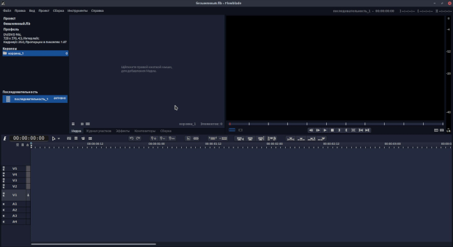
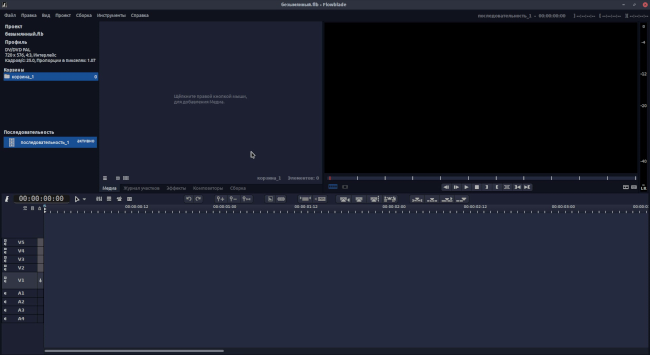

Оглавление / Введение
Видеоредактор Flowblade это многодорожечный нелинейный видеоредактор для Linux.

С его помощью вы сможете создавать фильмы из видеороликов, звуковых и графических файлов. Разрезать клипы на нужные участки, добавлять к ним эффекты. Вы также можете создавать многослойные составные клипы используя элементы композитинга.
Flowblade предоставляет возможность выбора режима работы (набор инструментов, его порядок, инструмент по умолчанию и определённое поведение монтажного стола) или его настройки.
Видеоредактор Flowblade это многодорожечный нелинейный видеоредактор для Linux.
С его помощью вы сможете создавать фильмы из видеороликов, звуковых и графических файлов. Разрезать клипы на нужные участки, добавлять к ним эффекты. Вы также можете создавать многослойные составные клипы используя элементы композитинга.
Flowblade предоставляет возможность выбора режима работы (набор инструментов, его порядок, инструмент по умолчанию и определённое поведение монтажного стола) или его настройки.